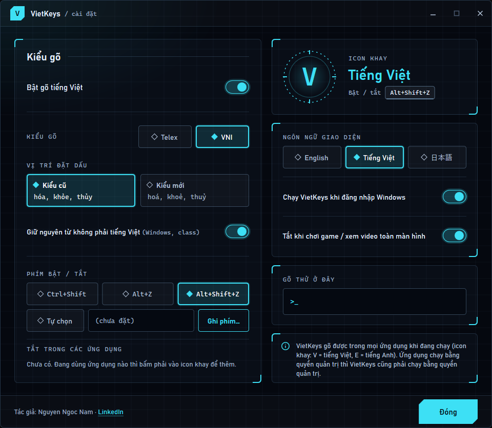

Telex và VNI
Gõ dấu ở đâu trong từ cũng được (tienge → tiêng). Dấu tự chuyển về đúng nguyên âm khi gõ tiếp: hoaf → hòa, thêm n → hoàn.
Telex và VNI trong mọi ứng dụng — Notepad Windows 11, trình duyệt, Office, chat — dùng song song với bộ gõ tiếng Nhật, Trung, Hàn. Một ứng dụng nhỏ, không cần thêm bàn phím vào Windows.
Vì sao VietKeys
Bộ gõ sửa một từ bằng cách gửi phím Backspace rồi gửi chữ mới. Khi nhiều Backspace đến cùng lúc, một số ứng dụng (ví dụ Notepad Windows 11 khi có bộ gõ tiếng Nhật) chỉ nhận một phần, nên chữ bị lỗi. VietKeys gửi từng Backspace một, đúng thứ tự, nên từ nào cũng ra đúng.
Đã kiểm tra bằng bài test gõ tự động trong Notepad Windows 11 (có bộ gõ tiếng Nhật của Microsoft), ô nhập chữ thường và ô nhập chữ có định dạng.
| Gửi dồn một lần | VietKeys |
|---|---|
| toôi | tôi |
| dđang | đang |
| tiêńg | tiếng |
| chaào | chào |
Tính năng
Gõ dấu ở đâu trong từ cũng được (tienge → tiêng). Dấu tự chuyển về đúng nguyên âm khi gõ tiếp: hoaf → hòa, thêm n → hoàn.
Khi bộ gõ đang bật (あ / 中 / 한), VietKeys để nguyên mọi phím cho nó. Tắt đi là gõ tiếng Việt ngay — không phải thoát hay mở lại gì.
Game và video toàn màn hình nhận đúng phím thật — kể cả phím chọn quân 0–9 của StarCraft. Muốn tắt trong ứng dụng nào khác, chỉ cần chuột phải icon ở khay.
Xóa lùi vào giữa từ rồi gõ tiếp, chữ vẫn được bỏ dấu: Vi65t ⌫⌫⌫ e65t → Việt. Xóa khoảng trắng sau một từ là sửa tiếp được từ đó.
Từ không thể là tiếng Việt được giữ đúng như bạn gõ: Windows, class, Notepad, text.
Ctrl+Shift, Alt+Z, Alt+Shift+Z hoặc phím tắt tự ghi. Chỉ phím bạn chọn có tác dụng, các phím tắt khác của ứng dụng vẫn nguyên.
hóa, khỏe, thủy — hoặc hoá, khoẻ, thuỷ. Tùy bạn.
Một file 0.5 MB. Không kết nối Internet, không thu thập gì — những gì bạn gõ chỉ ở trên máy bạn. Giao diện tiếng Anh, Việt, Nhật.
Cài đặt
Telex hay VNI, kiểu đặt dấu, phím bật / tắt, chế độ game và ô gõ thử. Chuột phải icon ở khay để mở.

Bảng phím
Dấu có thể gõ ở bất kỳ đâu trong từ.
| Phím | Kết quả |
|---|---|
| aa | â |
| ee | ê |
| oo | ô |
| aw | ă |
| ow | ơ |
| uw w | ư |
| uow | ươ |
| dd | đ |
| s | ásắc |
| f | àhuyền |
| r | ảhỏi |
| x | ãngã |
| j | ạnặng |
| z | xóa dấu |
Tieengs Vieejt → Tiếng Việt
Gõ phím đó hai lần để bỏ: ass → as, ww → w.
| Phím | Kết quả |
|---|---|
| 1 | ásắc |
| 2 | àhuyền |
| 3 | ảhỏi |
| 4 | ãngã |
| 5 | ạnặng |
| 6 | â ê ô |
| 7 | ơ ư |
| uo7 | ươ |
| 8 | ă |
| 9 | đ |
| 0 | xóa dấu |
Tie6ng1 Vie65t → Tiếng Việt
Cài đặt
VietKeys-Setup-0.2.0.exe, 0.5 MB. Chỉ một file, không cần tải gì thêm.
Chọn ngôn ngữ, bấm Cài đặt, rồi chọn Yes khi Windows hỏi quyền quản trị. VietKeys được cài vào C:\Program Files\VietKeys và tự chạy khi đăng nhập.
Tìm chữ V ở khay hệ thống: V = tiếng Việt, E = tiếng Anh. Nhấn Ctrl+Shift để chuyển.
Bấm More info, rồi Run anyway. VietKeys còn mới và chưa được ký bằng chứng thư số (code signing) nên SmartScreen chưa nhận ra.
Cùng VietKeys.exe, kèm install.cmd, uninstall.cmd và hướng dẫn tiếng Anh, Việt, Nhật, Trung. Hoặc chạy thẳng VietKeys.exe, không cần cài.
Tải bản zip · 0.2 MBSettings › Apps › Installed apps › VietKeys › Uninstall. Gỡ sạch, kể cả phần cài đặt.
63cab8b56364fd6b67f76845128941ced22c0936dadf98e0cd1a6ca2d19cb0a0 VietKeys-Setup-0.2.0.exe 4f0039d635bb0f778aeef299b91f82ccea8285430569ca37b5df4383b3315ee2 VietKeys-0.2.0.zip
Hỏi đáp
Có. Tải về và dùng trên bao nhiêu máy tùy thích.
Không. VietKeys hoàn toàn không có mã kết nối mạng: không bao giờ kết nối Internet, không quảng cáo, không thống kê, và chỉ lưu cài đặt trong tài khoản Windows của bạn.
Để gõ tiếng Việt trong mọi ứng dụng, VietKeys theo dõi bàn phím (keyboard hook, cùng cách Unikey hoạt động). Phần mềm diệt virus để ý việc này. Nếu được hỏi, hãy cho phép VietKeys.exe.
Chỉ nên chạy một bộ gõ: hai bộ gõ sẽ cùng sửa một từ. Cửa sổ cài đặt của VietKeys sẽ cảnh báo khi Unikey đang chạy.
Nếu ứng dụng đó chạy bằng quyền quản trị, Windows không cho ứng dụng thường can thiệp vào phím của nó. Hãy chạy VietKeys bằng quyền quản trị, hoặc mở ứng dụng đó bình thường.
Windows 10 và Windows 11, bản 64-bit. VietKeys chỉ là một file exe, không cần cài thêm runtime hay file nào khác.
Miễn phí, nhỏ gọn, làm cho Windows 10 và 11.
VietKeys luôn miễn phí. Nếu bạn thấy hữu ích, hãy mời chúng tôi một ly cà phê qua Ko-fi.